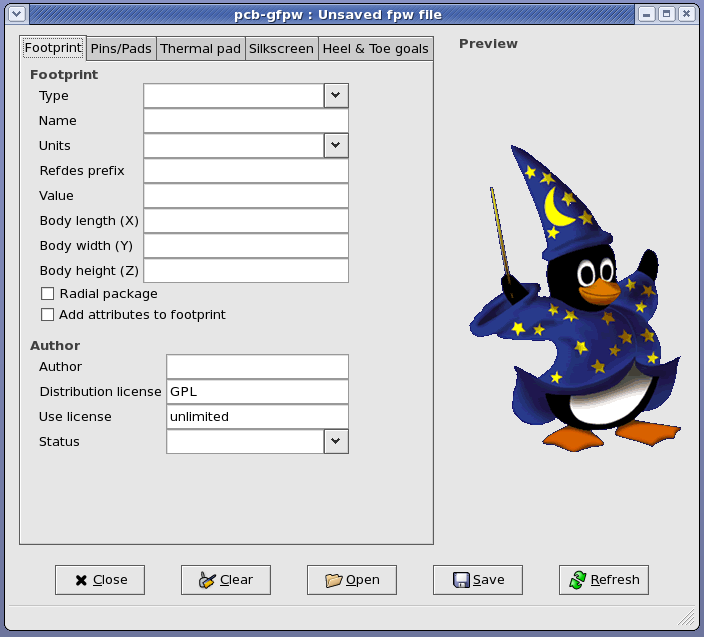
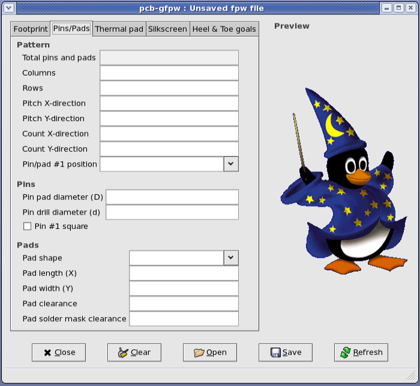
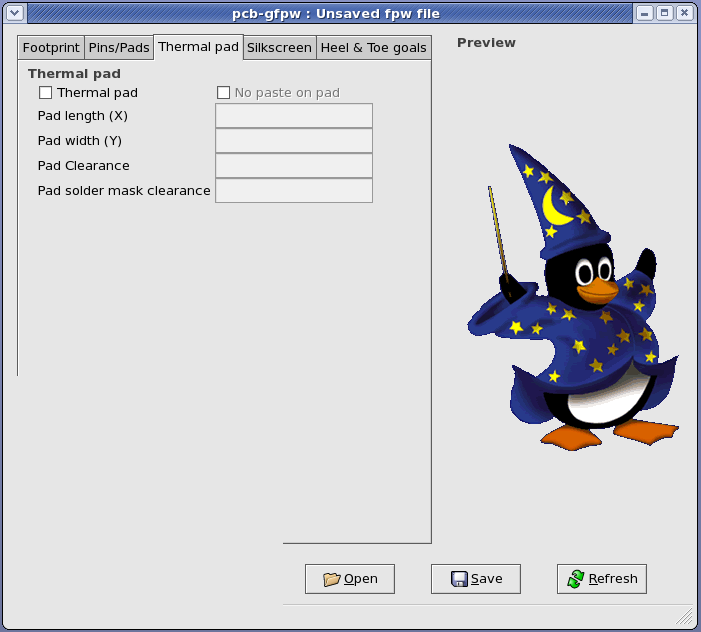
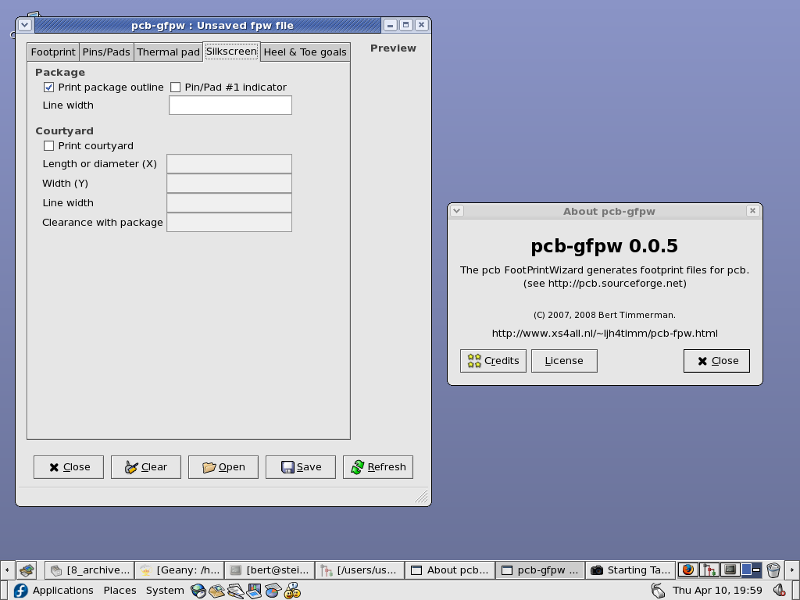
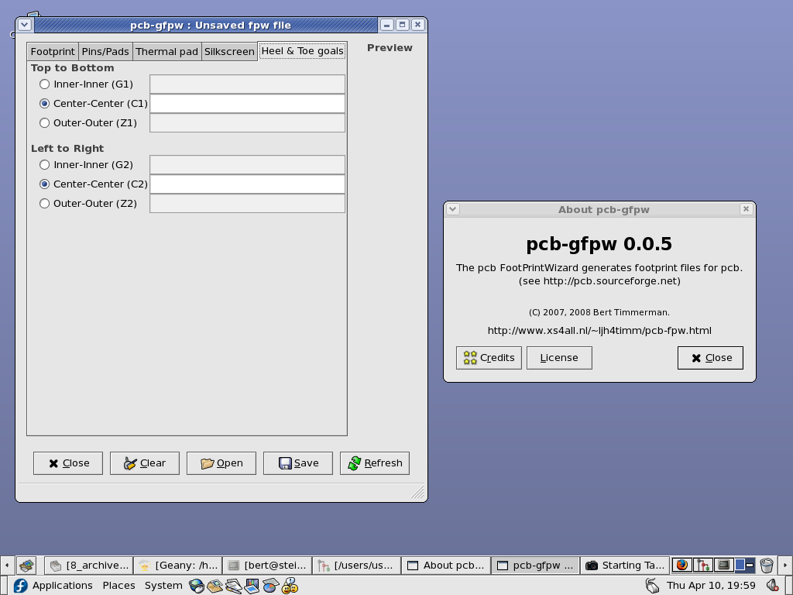

The first tab with entries is named "Footprint" and can be used for the input
of general information about the footprint.
At the entry named "Type" one can start entering the footprint type by
selecting from a list, the program will guess for the prefix of the footprint
as the first couple of characters of the footprint name.
The pcb-fpw program will try to guess which entries are needed for this
footprint type and "grey out" the entries and checkbuttons which it thinks are
not needed.
The entry named "Name" will contain the name the actual footprint file wil
have.
The footprint name should be entered without the ".fp" suffix.
From the entry named "Units" the units for the footprint dimensions can be
selected.
Currently only "mil/100", "mil" and "mm" are supported.

The second tab is named "Pins/Pads" and should be used for the input of
information about the number and pattern of pins and/or pads, the shape and
clearances.

The third tab is named "Thermal pad" and can be used for an optional thermal
pad if the footprint type allows for such an option.

The fourth tab is named "Silkscreen" and can be used for the input of an
optional silkscreen to be drawn, such as package outline, pin/pad #1 marker
and/or courtyard.

The fifth and last tab is named "Heel & Toe goals".
This tab is for the input of heel and toe parameters to allow for the creation
of PLCC, SO, QFN or QFP packages.
The five buttons in the lower part will have the following functions: